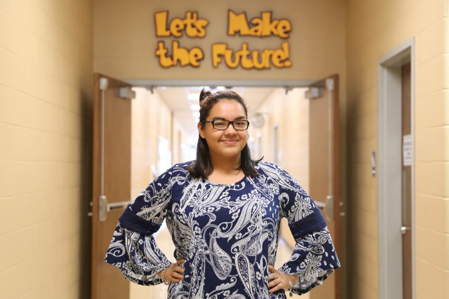

Home
Portfolio
♥ About Me ♥
My name is Esmeralda Castillo and I was born and raised in San Antonio, TX. I will be graduating with my Associates of Science in Engineering this May and plan on majoring in business management to work in the robotics industry. I am Chair of the San Antonio Youth Commission and am passionate about serving as a District 3 Representative. I am the VEX and MATE robotics manager at my high school and have competed in three international robotics competitions. Overall, my hobbies include singing, traveling, playing chess and baking.

Fall Semester Highlights
- Through my service on the San Antonio Youth Commission, I was selected to co-facilitate a workshop at the StriveTogether National Education Conference in Phoenix, Arizona.
- As a School Ambassador, I had the opportunity to give congressman Doggett a school tour on Dec. 15th
- The RattleTones performed for Palo Alto College’s annual Holiday Lighting Ceremony and are currently planning our school’s first annual talent show.
- At our first VEX competition, one team advanced to the State competition and another team was awarded the Design Award.
- I volunteered to be a student MC for our school districts Veteran’s Day Ceremony.